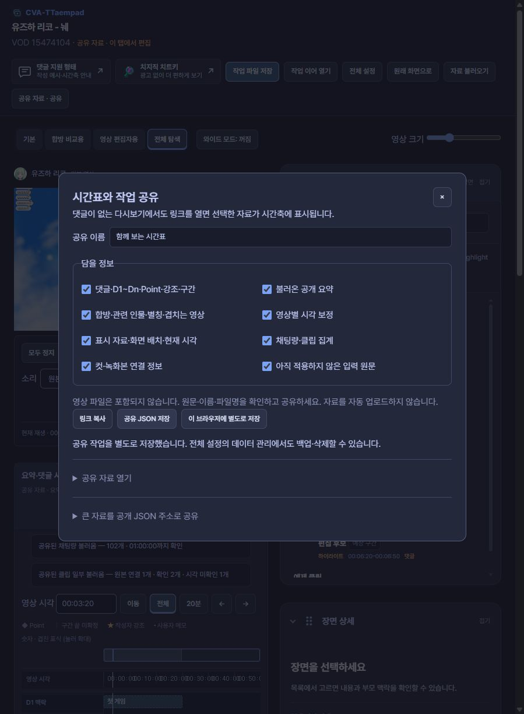
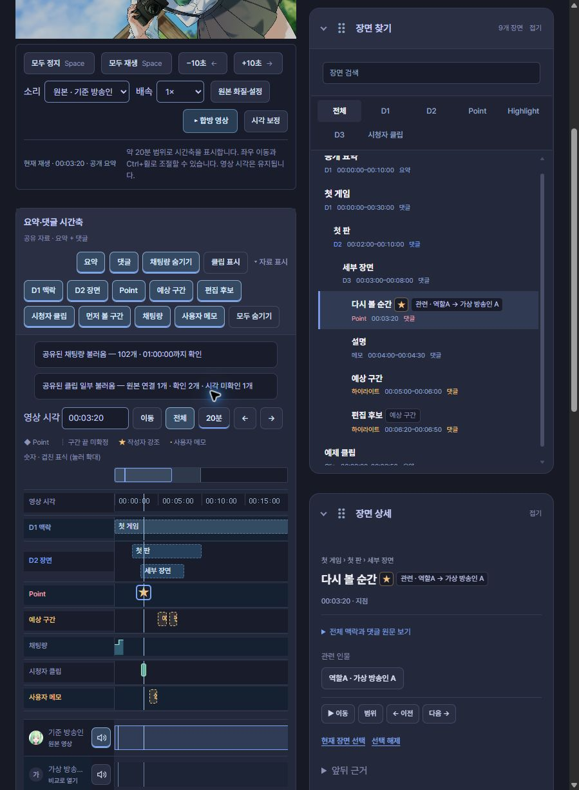
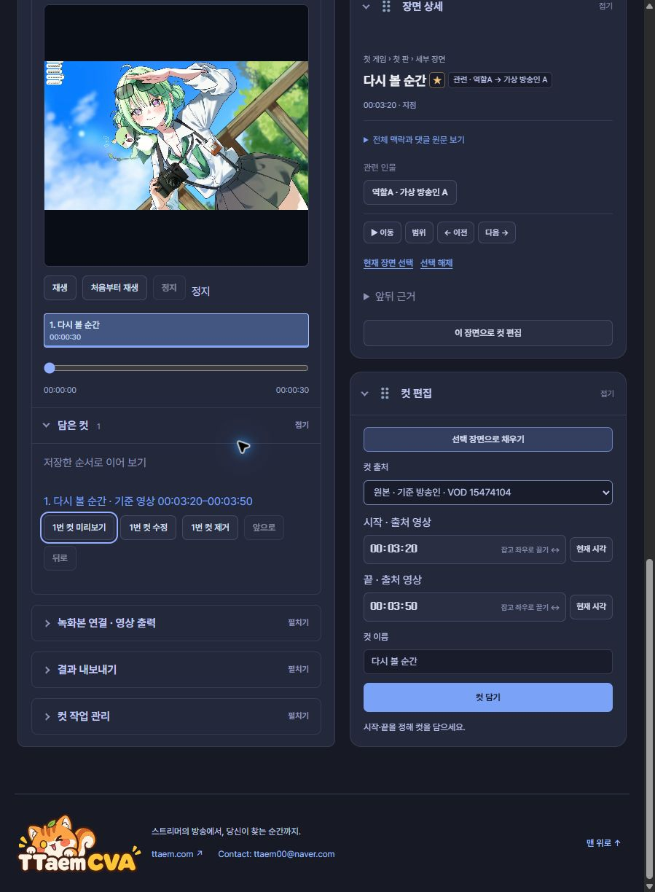

링크로 시간표 공유하기
댓글이 없는 다시보기에도 시간표와 합방 정보를 붙여 볼 수 있습니다. 작업실의 공유에서 링크를 만들고, 탬패드가 설치된 Chrome에서 열면 같은 다시보기의 공유 작업실이 열립니다.
보내는 사람
- 원하는 댓글·요약을 시간축에 불러옵니다.
- 상단 공유를 눌러 이름과 담을 정보를 고릅니다.
- 링크 복사를 눌러 전달합니다.
집계나 컷을 함께 보내려면 채팅량·클립 집계, 컷·녹화본 연결 정보를 선택하세요. 입력 중인 원문은 별도 선택 항목입니다.


담을 수 있는 정보
| 정보 | 함께 전달되는 내용 |
|---|---|
| 댓글 | 원문·여러 문서, D1~Dn·Point, 별 강조, 메모·예상 구간, 설명·원본 구간 |
| 공개 요약 | 앱에 불러온 요약의 목차와 자료 |
| 인물·합방 | 이름·별칭·관련 인물, 찾은 겹치는 다시보기, 숨긴 인물 |
| 시각 보정 | 영상별로 맞춘 보정값 |
| 채팅량·클립 | 수집한 집계와 시점, 완료·일부 수집 상태 |
| 컷 작업 | 출처 영상·시작·끝·순서·이름, 녹화본 연결 정보와 출력 선택 |
| 화면 | 표시할 자료, 검색·선택 장면, 패널 순서, 시간축 범위·현재 시각 |
영상 파일은 전달되지 않습니다. 녹화본을 사용하려면 받는 사람이 파일을 다시 연결합니다. 원문·이름·파일명을 확인하고 공유하세요.
받는 사람
공유 링크를 열면 상단에 공유 자료 · 이 탭에서 편집이 표시됩니다. 기존에 저장한 댓글·컷을 덮어쓰지 않고 볼 수 있습니다. 영상은 자동으로 함께 재생하지 않습니다.
이미 작업실을 열고 있었다면 공유 내용이 먼저 안내됩니다. 입력 중인 원문을 파일로 보관한 뒤 이 자료로 작업실 열기를 누르세요.
이 브라우저에 별도로 저장을 누르면 해당 영상의 마지막 공유 작업을 보관합니다. 다음에는 공유 → 공유 자료 열기 → 저장한 공유 열기로 이어 볼 수 있습니다. 전체 설정의 데이터 관리에서도 백업·삭제할 수 있습니다.
링크가 너무 길다면
선택한 정보를 빼지 않고 공유 JSON 저장으로 전달하세요. 받는 사람은 해당 다시보기의 공유 → 공유 자료 열기에서 JSON 파일을 선택합니다. 파일만 골랐을 때는 현재 작업이 바뀌지 않습니다.
공개 주소를 사용하는 방법도 있습니다. 공유 JSON을 ttaem.com 또는 이 공개 가이드의 HTTPS JSON 주소에 올린 뒤 큰 자료를 공개 JSON 주소로 공유에 주소를 넣습니다. 로그인 없이 읽을 수 있는 파일이어야 합니다. 공유 메뉴가 파일을 자동 업로드하지는 않습니다.
링크는 8,192자까지, 공유 JSON은 16 MiB까지 지원합니다. 브라우저에 별도 저장할 자료는 8 MiB 이하입니다. 일반적인 댓글 시간표는 링크로 전달하고, 큰 집계·컷 작업은 JSON 파일로 전달하면 편합니다.
실제 시간축 예제
아래는 합성 시간표를 실제 설치된 앱으로 연 화면입니다. 영상의 실제 내용·참여 명단과는 무관한 예제입니다. D1·D2·상세 구간·Point의 별, 예상 구간·편집 후보·메모와 집계를 함께 볼 수 있습니다.


컷의 출처·시작·끝과 담은 순서도 함께 복원됩니다. 아래는 예제의 30초 컷을 받은 화면입니다.


시각 보정은 보낸 사람이 맞춘 값입니다. 같은 순간인지 두 영상을 보며 확인할 수 있습니다. 광고·로그인·접근 제한은 원래 다시보기의 이용 조건을 따릅니다.